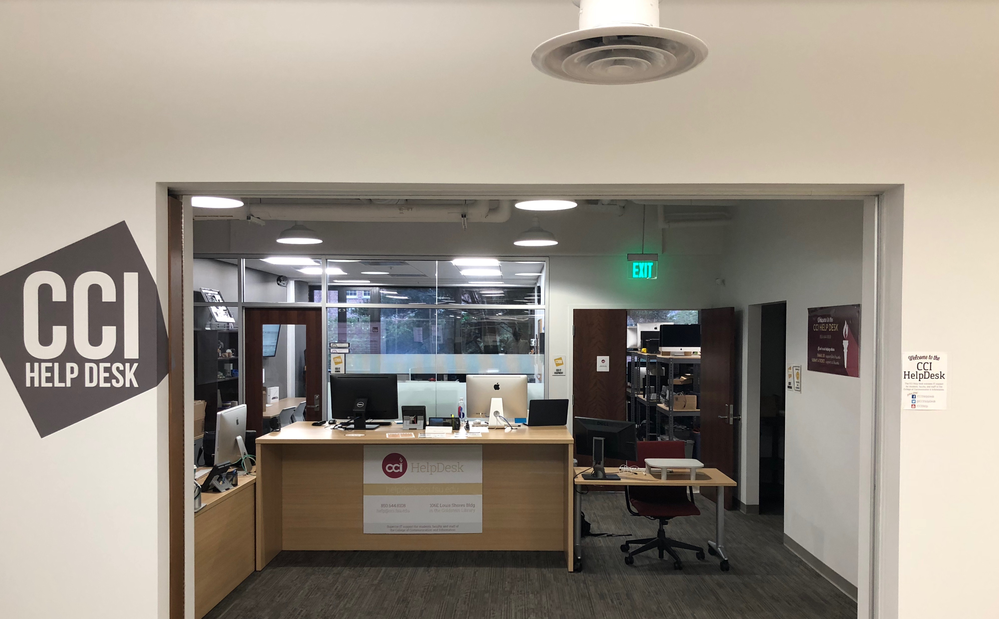
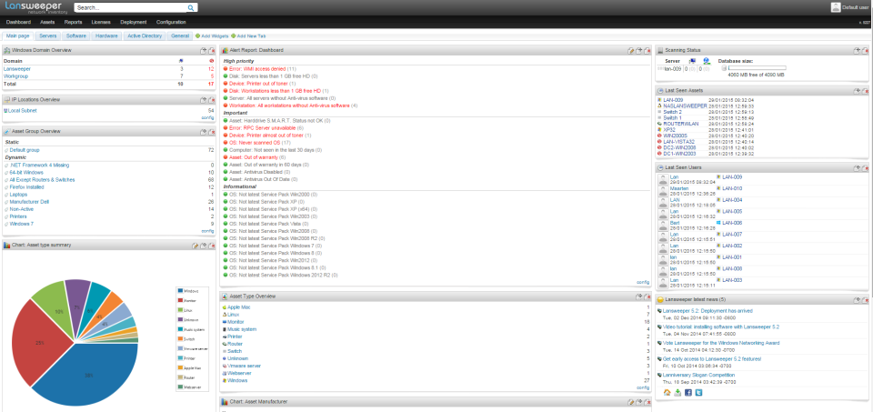
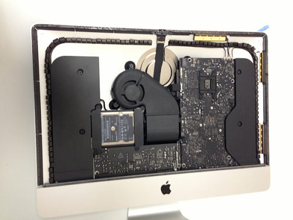
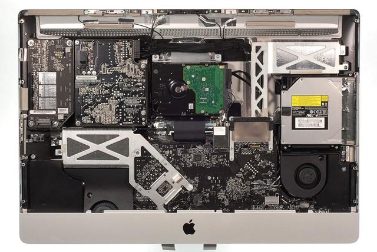
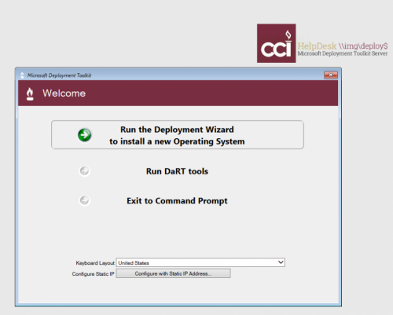
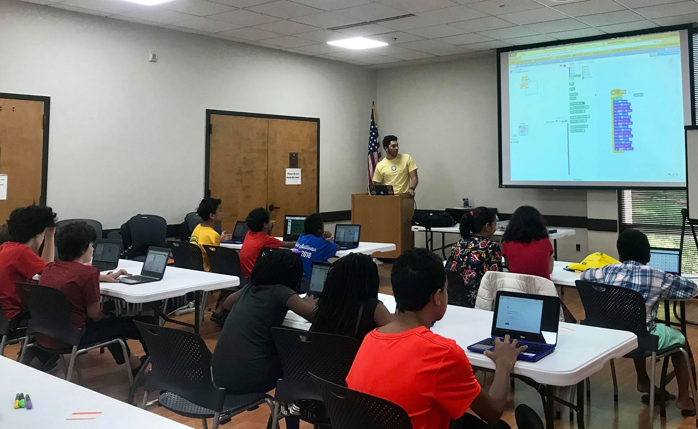
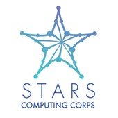
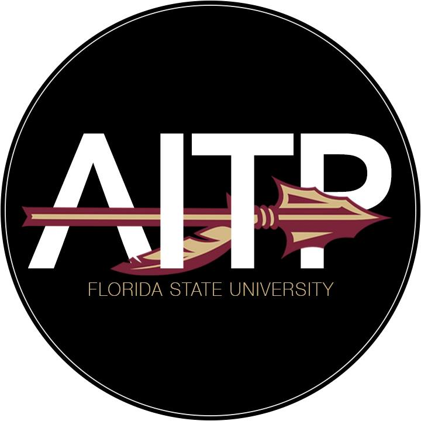

Intro
I am currently a Senior pursuing a Bachelor's in Information Technology at Florida State University.
Jonathon Zayas is an Information Technology professional pursuing a career in software, hardware,
and automation. Working on Space technology is a life long dream. Developing Weather forecasting,
space exploration, and national security at Lockheed Martin Space is apart of his new journey.
Giving back to the community is one of his biggest passions. He spends free time coaching middle
school basketball and facilitating projects for the local Tallahassee community. He is the President
of Florida State University’s Community Outreach Group, a student organization whose mission is to
make Tallahassee a better place by utilizing students unique skill sets to accomplish project goals.
Promoting opportunities that enhance character, build relationships, and foster growth within the
community with a focus in areas of low income.

Work Experience

Through my current positions as a HelpDesk Technician and Associate System Administrator for FSU’s
College of
Communication & Information, I am not only improving my troubleshooting and technical skills but I
am also
learning how to work in a team environment and provide service to a wide variety of clientele. Our
team services
the entirety of the College (over 80 faculty, 100 staff members, and students). As a HelpDesk
technician, I
respond to user issues and solve problems by paying strict attention to detail using a ticketing
system. I have
gained a variety of skills through this position including knowledge of active directory, user and
group policies,
capturing images (cloning hard drives), deploying images, documenting issues for future use, profile
manager
configurations for Mac, .plist manipulation, creating & deploying virtual machines, and server
administration. As
a HelpDesk technician, I have completed a personal project by using a command line tool called
Munki. This
the software helped in automating the updating process for computer labs throughout the College,
with a
total computer
count of 300. In conjunction with my Helpdesk Technician position, I am working on another project
as an Associate
System Administrator. I am working on a new software platform called lansweeper. This is a tool for
asset tracking
that gives us full reports for devices on our College’s domain, as well as last user, are on
specific devices,
software installed, updates available, and more. It also has a built-in helpdesk client where we can
assign tasks
and receive tickets from faculty and students. We are in the middle of migrating over to this new
platform, and I
am in charge of the transition.
Resume
Lansweeper - Assest Tracking software
I set up a server for assest tracking using Windows Server 2016. I have it running in a virtual
instance at the datacenter at FSU. This software allows you to monitor all Technical assest in your
domain. I administrate 1000+ Assests. Whith this software we can easily troubleshoot any issues that
occurs before the user experiences them. This software utilizes Windows Management
Instrumentation(WMI) to communcate with assest and the server. Some devices have aditional software
installed on them to ping back to the server. These assest are usually linux / mac based osperating
systems.

Munki Documentation - Automation Tool for Lab environment
I set up a server for asset tracking using Windows Server 2016. I have it running in a virtual
instance at the data center at FSU. This software allows you to monitor all Technical asset in your
domain. I administrate 1000+ Assets. With this software, we can easily troubleshoot any issues that
occur before the user experiences them. This software utilizes Windows Management
Instrumentation(WMI) to communicate with assets and the server. Some devices have additional
software installed on them to ping back to the server. These assets are usually Linux / Mac based
operating systems.
Hardware Repairs / Upgrades
I have replaced the glass on both IMac 2011 and 2013 Models. I have also upgrade components in both
models from HDD to SSD.


Windows Imaging Process
For our windows computers, we use Microsoft Deployment Toolkit over Pixie boot.

DeployStudio
Deploy Studio is a software that was used for imaging our Mac computers. It allowed you to create
custom workflows for different work environments. We would capture "images" (clone hard drive
states) and apply them to other computers. I've written scripts that allowed further customization
for this
process.
This is documenation for editting workflows
Skills
Here are links to some of my work!
Involvement

Leader
The mission of the STARS (Students & Technology in Academia, Research & Service) Alliance is to
increase the participation of women, underrepresented minorities, and persons with disabilities
in IT/computing disciplines through multi-faceted interventions. These interventions focus on
projects and programs that start at elementary school and progress through graduate school and
on to IT/computing careers.
STARS implements “best practices” interventions with an integrated focus to:
- Educate and bring awareness to K-12 about IT/computing education programs, careers, service,
etc.
-
Recruit and retain underrepresented populations in post-secondary computing programs and
increase awareness of IT/computing disciplines and careers. Bridge student readiness for
IT/computing and increase the number of undergraduates who enter IT/computing graduate
school or the workforce.
-
Sustain and institutionalize effective broadening participation in computing (BPC) practices
at alliance institutions.
-
Disseminate and increase national awareness of effective BPC practices.

President
Our mission is to help make Tallahassee a better place by utilizing each student's unique skill
set. We aim to find outreach opportunities that foster growth within the community.
Projects:
- Senior Helpdesk
- R Frank Nims Middle school - Arduino music light show
- Scratch Workshop
- Hardware workshop
Member
The Association of Information Technology Professionals (AITP) is an organization comprised of
career-minded individuals who seek to expand their potential through events, networking,
mentoring, and socialization. The organization follows a strict code of ethics, instills
professionalism, and defines obligations to management, fellow members, society, the College and
University, employers, and the country.

Member
Transfers Helping Transfers is a unique organization that was put in place to create a smooth
transition from a student's past college/university to FSU. By providing a past transfer student
as a mentor figure to the newest transfer students we found it a more personable way to have any
question answered. Questions ranging from where a certain building is on campus to what the
nightlife is like in Tallahassee, your mentor will be a guiding light to your success here at
Florida State.

Member
From business to biology, technology is becoming increasingly critical in most every career. Our
college curriculum is unable to keep up. Even though high schoolers across the nation are
learning programming languages, most FSU students are not. Run by students and run for students,
Code education teaches tech topics to non-tech majors.
Contact Info
Phone number: 904-930-1412
Connect with me on some of my favorite social sites!
Back to the beginning!